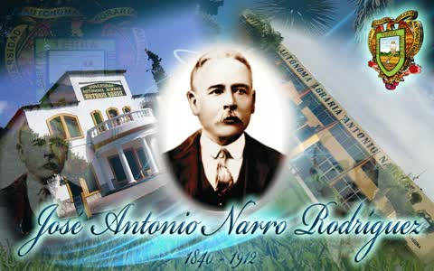

Narro García × Rodríguez · Saltillo

Agricultor y filántropo · Donante de la hacienda de Buenavista (UAAAN) · Saltillo, Coahuila · 1840 – 1912
Agricultor saltillense (1840–1912) que en su testamento legó su fortuna y la hacienda de Buenavista para fundar una escuela de agricultura; de ahí nació la Universidad Autónoma Agraria Antonio Narro. Segundo albacea: José García Rodríguez, hijo del gobernador Antonio García Carrillo.
José Antonio Narro Rodríguez, conocido como Antonio Narro, nació en Saltillo, Coahuila, el 4 de febrero de 1840, hijo de Antonio Narro García y de María del Carmen Rodríguez. Murió en San Antonio, Texas, el 24 de septiembre de 1912. Soltero y sin hijos, dejó su fortuna para que existiera una escuela de agricultura.
Quedó huérfano muy pronto y fue criado por sus hermanos; entre ellos, Trinidad Narro Rodríguez, casada con el acaudalado Enrique Mass (Maas). Hizo la primaria en Saltillo y, con el apoyo de su cuñado, viajó a Europa y a Estados Unidos, donde estudió agricultura y teneduría de libros. A su regreso trabajó en haciendas de la Comarca Lagunera y se dedicó al cultivo del algodón; con su trabajo formó una fortuna que, según su testamento, rebasaba los 70 mil pesos de la época. Fue propietario de la hacienda de Buenavista, al sur de Saltillo, donde vivió los últimos años de su vida, y de la mitad de la hacienda de Icamole, Nuevo León (según Zócalo).
Según la ficha de este archivo fue alcalde de Saltillo; la reseña de Zócalo dice que fue presidente municipal «en varias ocasiones de distintos lugares del Estado». Pendiente: lista de periodos y municipios con acta o fuente oficial.
Dejó como albacea a su primo Francisco Narro Acuña, quien gestionó la fundación, y como segundo albacea a José García Rodríguez, hijo del gobernador Antonio García Carrillo y después director del Ateneo Fuente. Ese vínculo es el que une esta ficha con la familia García de Saltillo.
Su decisión creó la institución que hoy es la Universidad Autónoma Agraria Antonio Narro (UAAAN), en Saltillo. La biblioteca de la universidad lo presenta como «noble y generoso agricultor».
Notas editoriales. (1) Fecha de muerte: la reseña de Zócalo da el 10 de julio de 1912, que según Vanguardia es la fecha del testamento; este archivo registra el 24 de septiembre de 1912 (Vanguardia y ficha del archivo). (2) No confundir con otro Antonio Narro, hijo de Blas Narro y Juana Acuña, que casó en Villa de Patos el 13 de septiembre de 1872 con Bárbara García (acta del archivo). (3) La relación directa con la línea de Lorenzo García y Juana de la Garza no está probada con acta; su padre se llamaba Antonio Narro García; se agrupa en García Garza por ese apellido García y por su relación con José García Rodríguez, y su filiación queda en investigación. (4) Imagen: archivo Sefarad MX (cartel de la UAAAN, baja resolución).
Saltillo, 4 de febrero de 1840 — San Antonio, Texas, 24 de septiembre de 1912. Hijo de Antonio Narro García y Carmen Rodríguez. Hermana: Trinidad Narro Rodríguez, viuda de Enrique Mass.
Agricultor. Alcalde de Saltillo. Sin hijos. En testamento donó la hacienda Buenavista, al sur de Saltillo, para una escuela de agricultura. De ahí sale la Universidad Autónoma Agraria Antonio Narro. Trinidad destinó bienes al Asilo Narro Mass, la Casa de Oficios y el Hospital Vicente de Paul.
José García Rodríguez, hijo de Antonio García Carrillo, fue segundo albacea de este testamento.
Otro Antonio Narro —hijo de Blas Narro y Juana Acuña— casó en Patos el 13 de septiembre de 1872 con Bárbara García, hija de Jesús García y Rosalía Flores.
Esta biografía también está publicada, con sus fuentes, en genealogiasefardi.site. Información avalada por Sefarad MX y genealogiasefardi.site.